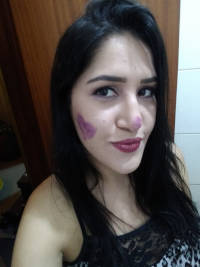

Sou Ana mãe de duas crianças lindas, casada com um homem incrível. Já fiz de tudo um pouco nessa vida, hoje tenho um sonho que é ter liberdade geográfica, por isso comecei essa aventura de ser mãe, mulher e estudante.